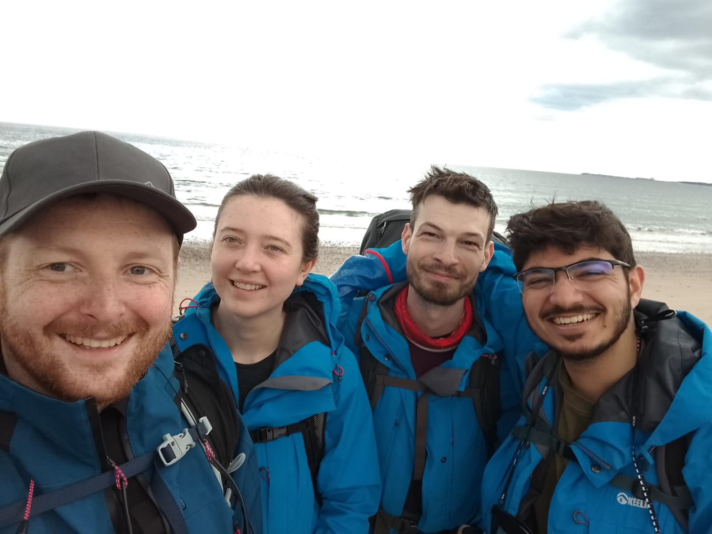
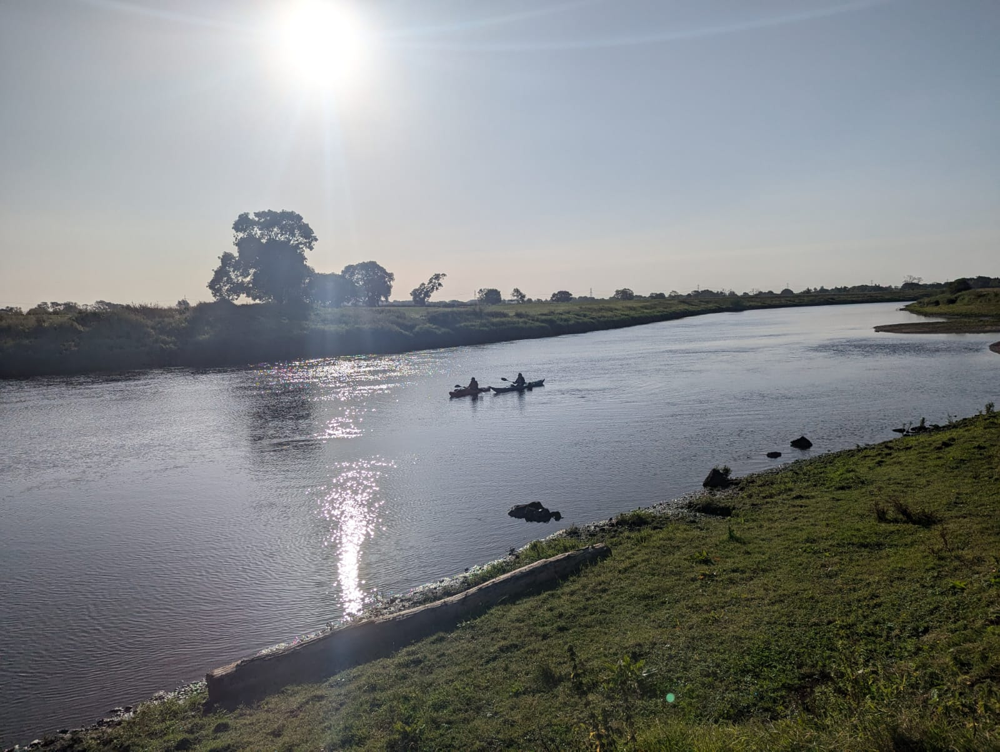
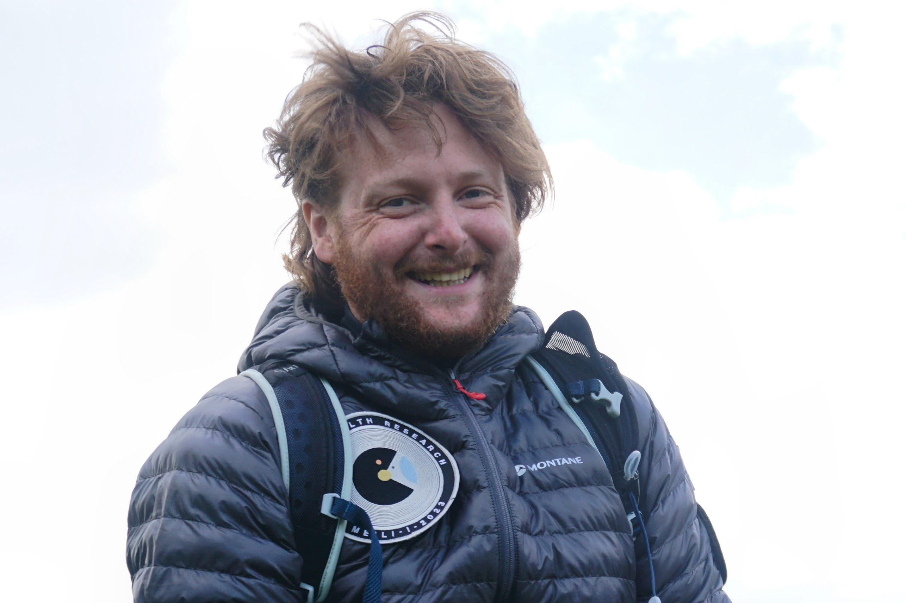

◈ Expeditions
Analogue missions, leadership, and field operations.

🧭 Meili-2 Analogue Mission (2024)
Mission Commander, Space Health Research UK
Appointed as Mission Commander following a leadership transition. Leading team cohesion and operational readiness for a remote analogue space mission on a Scottish island.
- Developed mission objectives and science plans prioritizing safety and crew well-being.
- Led pre-mission training, including field drills and communications prep.
- Built crew morale under time-limited preparation conditions.

🚣♂️ 100km Kayaking Expedition (2024)
Expedition Leader, Stroke Association Fundraiser
Led a 100km charity kayaking trip supporting a stroke survivor, planning all logistics and safety protocols.
- Planned route, training weekends, and support vehicle coordination.
- Adapted trip scope to account for rehabilitation needs.
- Ensured water safety, practicing capsize and recovery techniques in advance.

🛰️ Meili-1 Analogue Mission (2023)
Mission Control Specialist & Reserve Deputy Commander
Selected as one of the first 10 analogue astronauts in the UK. Mission control team for a two-week simulated space mission in Scotland.
- Served as Communications Officer, managing field-MC coordination.
- Trained in field geology, orienteering, and high-risk environment survival.
- Supported UV, tick, and terrain safety protocols.